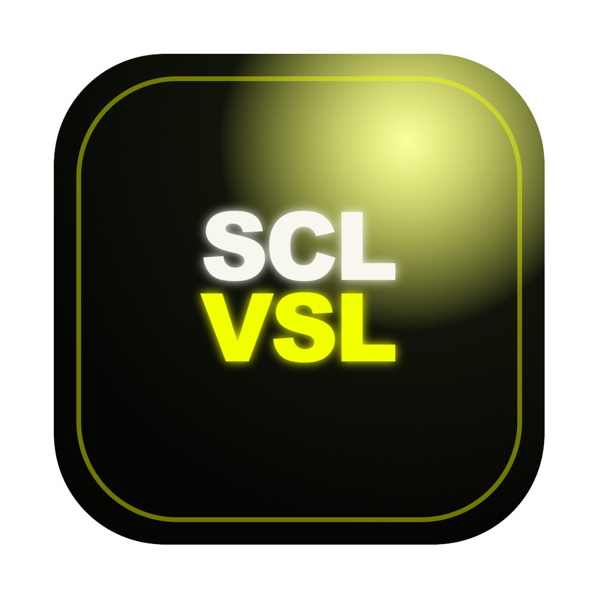

SOCL Visuals
Studio
Licensed
ProjectBelum ada source
No clip loaded —
00:00 / 00:00
Detected clips
0
Belum ada clip terdeteksi. Run pipeline dulu.
0 edit di Caption Editor · re-render pakai styling terbaru?
Idle
Paste URL atau import file untuk mulai.